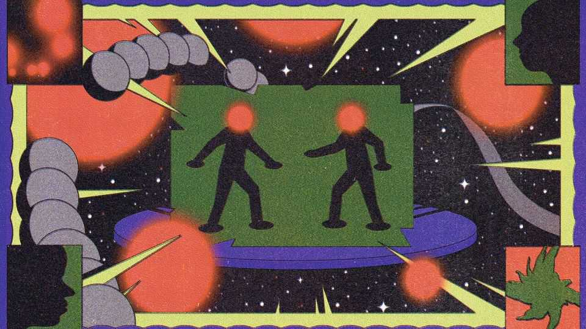
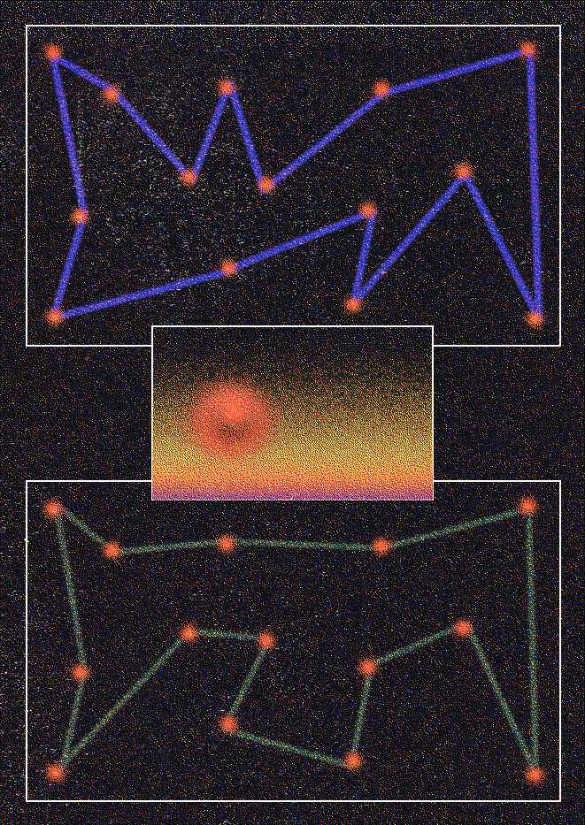

Astronomers are mystified by little red dots in the sky
They could be the universe’s first supermassive black holes
Nov 5th 2026
WHEN THE James Webb Space Telescope (JWST), a high-resolution camera orbiting the Sun, began sending images back to Earth in 2022, astronomers were greeted with something strange. Alongside the eclectic cast of cosmic characters they had been expecting—stars, galaxies, nebulae and the like—were a handful of small, red-tinted points of light, or, as the technical jargon has it, “little red dots”. Astronomers had no idea what they were.
In looking for answers they have turned to the most mysterious objects in the universe—black holes. For some astronomers, the dots are black holes caught in unprecedentedly violent growth spurts. For others, they are bizarre, star-like objects with black holes at their centre. Getting it right matters: these dots could reveal the origins of the supermassive black holes that sit at the centre of galaxies, and explain how they got so big so quickly. The debate is fierce, says Dale Kocevski, an astronomer at Colby College, in Maine. “I’ve never quite seen anything like this.”
What is known is that the little red dots are, unsurprisingly, little—typically with a width less than 0.5% of the Milky Way’s—and red, emitting bright light that is rich in longer, redder wavelengths. They are also old. The universe’s first little red dots were born in the cosmic dawn 13.4bn years ago, when the universe was around 500m years old—not long after the first galaxies appeared. Since the dots were first discovered more than 500 of them have been reported, and the number continues to rise. “In every single image you’re taking, you’re seeing one of these objects stare right back at you,” says Rohan Naidu, an astronomer at the University of Hawaii who was part of the team that coined the term. “So they have to be important.”
When astronomers first saw the little red dots, they thought the objects were the glow of very populous mature galaxies. But such well-developed galaxies would not have had enough time to form so soon after the Big Bang. That led some to dub the dots “universe breakers”, whose existence implied the universe might be older than previously thought.
Then, in early 2023, Dr Kocevski and his colleagues discovered a unique pattern in the spectrum of light the dots produce. It suggested that they were surrounded by a cloud of dense, rapidly moving hydrogen gas. To get gas moving at the necessary speeds, huge gravitational forces would be needed. That disfavoured universe-breaking galaxies, as the large distances between their stars would keep the forces relatively small. Instead, a huge amount of mass would need to be concentrated in a tiny volume. That is the perfect description of a black hole.
But this seems paradoxical. The gravity of black holes is so strong that not even light can escape their grasp: how, then, could they glow? The answer is that as matter falls into them, a process known as accretion, it emits radiation as it heats up. If a black hole is big enough, that radiation can be extraordinarily intense. For example, active galactic nuclei (AGNs)—accreting supermassive black holes at the centre of most galaxies—are among the universe’s brightest light sources.
Accreting black holes could thus be responsible for the brightness of the little red dots seen by the JWST. And although ordinary AGNs are surrounded by doughnuts of gas and dust, the heavy elements that make up the dust may not have had time to form so early in the universe’s history. “There may be so much gas that that doughnut becomes a cocoon,” says Dr Kocevski. “It completely envelops the thing.” Light interacting with the hydrogen gas would also come out reddened.
But there is a problem. AGNs also release X-rays as the matter falling into them heats up. Little red dots, however, emit almost none at all. To explain this, the AGN advocates propose that the central black holes are accreting at an unusually high rate. Just as it is hard to get off a train as a crowd is scrambling to get on, the build-up of infalling matter limits how many X-rays can break through. For Dr Kocevski the appeal of this explanation comes down to Occam’s razor: “These are things we already know about, just slightly modified.”
Dr Naidu, however, is in a more imaginative camp. “We just need to concede that this is a fundamentally new kind of astrophysical object,” he says. Dr Naidu and his colleagues propose that the little red dots are neither stars nor black holes, but something that shares features with both. Their imagination, however, does not extend to nomenclature: they call these novelties “black-hole stars”.

Like an AGN, a black-hole star is an accreting black hole wrapped in a gas cocoon. But this cocoon’s density is much greater. So great, in fact, that no radiation emitted by the black hole’s infalling matter—not light, not X-rays—can ever directly escape. Instead, the radiation is absorbed by the innermost layer of gas, causing it to emit new radiation, at longer wavelengths, which the next layer will absorb. After many such stages, say the idea’s proponents, the light would emerge from an outer layer similar to a star’s glowing surface, possessing a distinctive red tinge. Such objects would thus look like stars from the outside, but powered by growing black holes instead of nuclear fusion.
Although both proposals go some way to explaining the dots’ unique characteristics, neither does so satisfactorily. Critics of the AGN scenario contend that it requires a string of assumptions to explain their unusual appearance. But the advocates of black-hole stars have to explain why a handful of dots have displayed light leaking out of the gas cocoon, something their model forbids. Which side of the debate sounds more convincing can come down to taste. As Jenny Greene, an astronomer at Princeton University, puts it: “People see what they want to see.”
What could settle the matter? The answer may lie in the dots’ mass. The two proposals predict wildly different numbers from the same data: AGN-like objects can be several orders of magnitude heavier than black-hole stars. Writing in Nature, in May, a team led by Ignas Juodzbalis, then at the University of Cambridge, published the first mass measurement of a little red dot. They calculated the speeds with which different patches of the gas cocoon moved, and used them to infer the dot’s mass. The result, about 50m solar masses, was a point for team AGN.
But the work has proved controversial. Dr Juodzbalis himself points out that it provides only one data point. What’s more, “I think they can’t do what they said they did,” says Dr Greene. She contends that the authors’ technique works only when measuring the speeds of clearly defined objects, such as two stars, and not the motion within the messy gas cocoons that surround little red dots.
More than academic vindication is at stake. Astronomers do not know how the first supermassive black holes put on their weight, for example, nor how that shaped the galaxies in which they sit. The modest masses of black-hole stars would suggest that they started small and grew quickly by feeding on their gas cocoons. But if the AGN advocates are right, somehow the first black holes were massive at birth. On such questions, the little red dots punch far above their weight. ■